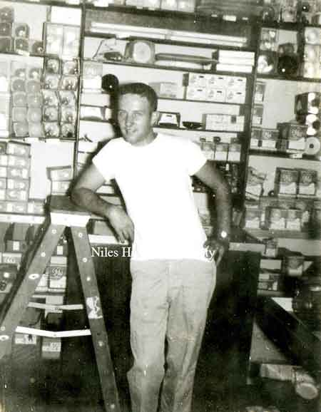
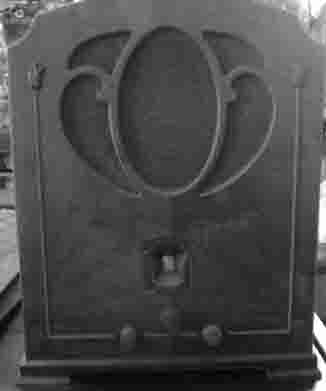

Ward-Thomas Museum


Rice Electric
Ward — Thomas
Museum
Home of the Niles Historical Society
503 Brown Street Niles, Ohio 44446
Click here to become a Niles Historical Society Member or to renew your membership
Click on any photograph to view a larger image, click on image again to zoom into photograph.
|
1923 view of the inside of the store. PO11.202 |
Rice
Electric
Store. Niles oldest and largest electrical contracting firm and appliance deale,. Rice Electric at 11 North Main Street, began life as a partnership of Rose and Rice Electric Company in 1921. Operational headquarters were, at that time, at Wade Rose’ home on Franklin Avenue. A year after the inauspicious beginning, the two-man operation moved to a Church Street location from which it operated for close to two years before switching again to 46 State Street. Always on the lookout for a more spacious shop and increasing service with every step, the partners made their next-to-last move in 1930 when they opened a store at 8 North Main Street near the Antler Hotel. They had been adding new lines of merchandise whenever space and time would permit. In 1923 Rose and Rice took on the local dealership of the first RCA radios, which incidentally, was their first appliance. In 1924 they introduced the Kelvinator refrigerator to a skeptical Niles public. Ralph Rice, quiet president of Rice Electric says, “ It was sure some job to sell refrigerators then. They cost too much money and people were used to ice. They didn’t need them then.” |
|
| |
||
It was in 1929 that Ralph bought out Rose but the name wasn’t changed until he moved the store to its present location at 11 North Main Street and renovated and remodeled it. “While the new store was being built, the business carried on from the alley as carpenters and decorators took over the front of the store”, laughed Ralph. Ralph is a veteran of the electrical business, having been in it since 1916 and before coming to Niles, was in the contracting business in Youngstown. Guy Rice, vice-president, Ralph’s brother, has been in the firm since 1924 and is now in charge of the contracting jobs. Lester, a nephew of Ralph, is assistant manager of the store and has been with the firm for two years. Mrs. Esther Rice is secretary-treasurer of the retail division. Daily Times April 27, 1949 After Ralph died in 1949, his wife, Mrs. Esther Rice, assumed the presidency of the corporation. Her son, Don Rice, upon graduation from McKinley High School in 1950, came to the assistance of his mother. The business was not new to him, as he was reared in a basket back of the cash register. At the age of 10 during World War II when Rice Electric could not buy Christmas tree lights, he can still remember spending evenings and Christmas vacation making and installing sets for customers. After two years in the service, he returned and assumed many of the responsibilities from his mother. In 1958 he became vice-president and treasurer of the company. When Mr. and Mrs. George Frech retired from the grocery business in 1959, Rice Electric, still striving towards a bigger and better showroom and repair shop, completely remodeled, redecorated and moved to 15 North Main Street. |
||
| |
||
|
Picture of a store display window
featuring a modern refrigerator for Rice Electric, 1931. |
Parade float for the Rice Electric Co... Only
“October Parade” on picture., no date |
Float from Rice Electric Co, ca
1944-4. |
|
|
||
11 North Main Street in 1940
or 1950 |
Second truck load of Electro Luxe's delivered in the spring of 1936 at the store on the west side of Main,...Corner of West Park and Main. Sign over entrance still reads “Rose and Rice Electric Co.” In picture:Guy Rice, Richard Redmond, Bill
Bevan, Ralph Rice and Donald Rice. |
Window display at Rice Electric shows the evolution of the washing machine. PO11.205 |
|
|
||
 Don Rice at 11 North Main Street. |
Grand opening of Rice Electric at |
Display of modern television sets taken March 1960, the grand opening at 15 North Main. Typical linoleum square tiles
in a diagonal pattern. Above the TVs are an assortment |
| |
||
Niles Daily Times advertisement for Rice Electric, ca 1926. Radio was becoming more popular as the number of commercial radio stations increased. Especially popular were the stations that broadcast music. The first radios for the home were set on tables or desks. Soon, full-size cabinets with the radio were available to purchase.  |
Niles Daily Times advertisement |
|
|
|
||


{kind=link}
{kind=link}
{kind=link}
{kind=link}
{kind=link}